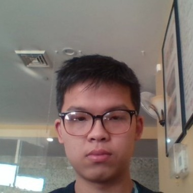

Senior Portfolio
THANH NGUYEN XUAN
Marymount University | 2021

Introduction
As a senior at Marymount University, Thanh has enhanced his skills and experiences through a variety of different courses, exams, and projects. He is expected to graduate in Fall 2022 with a bachelor's degree in Science in Information Technology with a minor in Computer Science. Through this portfolio, he will present insight into his capabilities in the field of IT including written skills, computer techniques, and remarkable achievements. It will consist of a personal statement explaining the reason for his passions for technology and IT work, the resume summarizing his background, outstanding senior activities, specific field of study with the documentation of highlighted academic work, necessary soft skills for jobs, awards, and honors and career plan.
Please spend your time examining this portfolio to learn about his journey and capabilities, then provide him with feedback for his improvement in the future.
Personal statement
My name is Thanh Xuan Nguyen. Currently, I am a senior student at Marymount University pursuing a Bachelor of Science in Information Technology with a minor in Computer Science and expected to graduate in December 2022. I consider technology as a part of my career since I believe it plays an important role in daily activity. Also, it is very interesting to work in a digital environment. My goal is to become an IT Help Desk with vast knowledge of computer software and hardware so that I can deliver my assistance effectively and instantly. I began to raise this dream when I was in high school. It took me 7 years to turn it into a remarkable achievement. With a reliable certification in the field of IT, I am confident to apply to any company for the position of IT Help Desk. I believe 4 years of academic experience in the field of IT and plenty of related activities will fulfill my vision to start my professional career.
Senior Activity

As a senior, I acknowledge the importance of this project1 towards the completion of my certificate in Information Technology. For the topic of this project, I chose to pursue Virtual Reality Technology (VR).

I chose VR technology for my research project for two reasons. First, it is my favorite technology. I want to pursue a career as a software engineer in VR in the future. I dream of building a virtual society where people could interact and take part in outdoor activities virtually. Especially when the world is under the impact of the pandemic, people can solve the need of hanging out with friends and family in their house.
Second, not many people recognize the value of this technology. Nowadays, it is vivid that the role of VR Technology in our society is very important. For example, it could provide medical treatments for mental health in psychology or therapy to help patients get over their issues. However, it does not seem to be popular within the community. Some people do not even know about this concept. As a result, I want to conduct a research project to bring out how valuable and beneficial this technology is.

I believe my topic is important for two causes. First, Virtual Reality is very beneficial in education and training. It offers a safe and convenient environment for new employees to practice. Moreover, it provides them with real experiences in which they could examine the outcomes of their decisions whether they succeed or fail. Thus, they can learn faster from their mistakes without causing any damage to the business and increase productivity. Moreover, it is safer for trainees to practice using VR headsets if their jobs are involved dangerous situations. For example, it is less risky for fire trainees to learn how to perform their mission in a virtual environment.

Second, it is necessary to introduce this interesting technology to as many people as it is. Even though this technology began to get the attention of the community, not many people know about its nature as well as its functions. Assigning this topic for the research project, I hope that more and more people will understand and acknowledge the enormous value of Virtual Reality.
Specific Field of Study
Within four academic years in the field of Information Technology, I have taken Advanced Java Programming, Cloud Computing, Operating Systems and Virtualization, Software Testing, Data Structures, and Algorithms. I believe these courses will grant me the necessary knowledge to become an expert in the IT Help Desk. As an IT Help Deks, I believe these valuable experiences also assist me in further study regarding Information Technology. Critically, it will become a premise for me to advance my career in IT Support.
1. Advanced Java Programming

Java: For the final assignment, I created an online menu for Pizza Order. It is a GUI where users can enter order information including their name, delivery address, and payment method, pizza details such as size and topping options.

The menu will notify users of the bill receipt when the order is confirmed. Also, users can verify if their order proceeds through their name and phone number. If users want to have their orders delivered to many different places, they can choose to add a delivery address to the system before confirming them.

2. Operating System Configuration
I have conducted a variety of labs regarding the operation of Windows 10 and Linux. For the last project, I choose to perform a lab whose purpose is to conduct the Internet configuration on Windows 10.

First, it is the process to get faster upload and download speeds in Windows 10. It is the step-by-step procedure to change the bandwidth limit, set the data limit for applications that consume too much bandwidth, disable meter connection, and delete unfound temporary files.

Second, it is the step-by-step process to speed up the Internet connection on Windows 10. It involves the work to change the bandwidth limit to 0, flushing the DNS Cache, and emptying the TEMP folder.
3. Software Testing
Software Testing: For the final project, I am required to prepare a test-case report on any features of your choice which are in Engage

Engage is MU's social media platform that enables the university community to find organizations and events on the university campus. The platform has numerous tools for interacting with members within organizations as well as tracking the level of engagement or involvement of members within various campus groups.

My test-case report consists of a description of the test environment for conducting the tests, 10 Test cases (use the template below for each test case), Exit Criteria – conditions that must be fulfilled to successfully conclude the testing cycle or exercise.
Soft Skills
1. Adaptive
2. Progressive
3. Quick Learning
4. Time Management and Organizations
5. Teamwork
3. Quick Learning
4. Time Management and Organizations
5. Teamwork
5. Teamwork
These skills are demonstrated through the progress of my study during the academic years. For example, as I took MGT-345, an online course about Project Management, I think it was one of the most challenging courses I had ever taken. This course included two critical parts. First, it was the weekly quizzes and final exam. They were mostly multiple-choice questions. I considered it very difficult since it required critical thinking in the lectures. To achieve good grades in this part, I had to participate in class activities actively as well as keep rewatching the recording. As a result, I got the quizzes well done.
{kind=link}
{kind=link}
Second, it was all about teamwork. I think the group work in this class was not so hard. However, a major section required every group to have Microsoft Project to plan a detailed project. It was unlucky that I was the only member of the team who had access to this software, which meant that I was fully responsible for the section taking 35% of every member of our group.
{kind=link}
All of us seemed not to have experience with this application, I cannot rely on any teammates but general guides on the Internet. However, I performed the project very nicely. When the group initialized the basic contents of the project, I gained experiences from project instances on the Internet. It helps me acknowledge how to organize the project, estimate the budget, and arrange the tasks with suitable operators. . Besides, the professor supported me well. Whenever I needed some help and emailed him, the responses came immediately. At the end of the semester, our team reached a 100% grade in group assignments.

Awards and Honors
1) Dean's List (every semester): To maintain the position in the Dean’s List, students must acquire good academic standing with a grade point average of at least 3.4. Since I have reached 3.981 of my GPA, I am still among the elite members of this list.

2) Phi Theta Kappa Organization Membership (every year): Phi Theta Kappa is the International College Honor Society. To be among the members of this organization, every student must keep their GPA at 3.5 or higher. I successfully fulfilled this requirement

Career PLan
I believe that my report fully demonstrates my progress of academic study with skills and experiences in this portfolio. It includes the soft skills and experiences I have obtained over the past years of academic study. However, lack of workplace experience is one of the points I need to fulfill. I have successfully applied for an internship before my graduation in December 2022. It will start a month before my last semester in Fall 2022. I expect the upcoming job will be challenging since it will train my spirit and enhance my skills well. After graduation, I want to pursue a career as an IT Help Desk. By that time, I will study the process of developing VR software. I plan to apply to UC San Diego. They offer 3 courses in 5 months regarding the operation of designing and implementing interactive VR software applications. My goal is to obtain the UCSanDiegoX's Virtual Reality (VR) App Development Professional Certificate in the next year.
{kind=link}

In my last semester, I am about to apply for an official internship to enrich my experience so that I will be qualified for an ideal job after my graduation. Even after I have received the certificate, I will keep up my study since being IT Help Desk requires me to consume the knowledge constantly when the digital world keeps changing day by day. Besides the career of an IT Help Desk, I want to expand my knowledge in the field of Computer Software. Virtual Reality is my favorite technology. With the birth of Metaverse, the popularity of this technology is getting bigger and bigger. In the future, I want to exploit my potential in this field through the development of VR software and updating modifications for the operation of Metaverse.
{kind=link}
Once again, thank you for spending time reading my portfolio. I look forward to seeing the feedback from you soon and discussing what is necessary to implement for my career.
Scroll Back to the First Page
Get in touch
Contact Box: Fill in your information inside the box below for questions.
© Thanh Nguyen Portfolio. All rights reserved. Design: Thanh Nguyen.